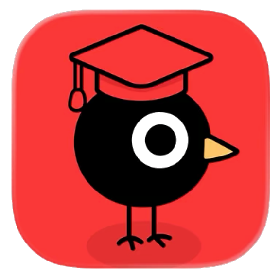

Trusted by the world's biggest brands
We partner with leading technology companies and organizations to deliver innovative product solutions


- and more…
Our Work
A sample of the product work our teams take on.
-
AI · Search
Gemini-powered programmable search
Working with Google's Search Ads and Syndication team, we integrated Gemini into Programmable Search Engine so publishers could offer smarter, more relevant search on their own sites.
We also built ad sections that serve relevant ads to publishers without touching user data or resorting to clickbait.
-
Strategy · Research
Sizing the campus dining opportunity
Uber asked whether the campus dining point-of-sale market was worth entering. We ran stakeholder analysis with Georgetown Dining, Aramark, and Grubhub.
We delivered a go/no-go recommendation framework grounded in what Uber's hardware could and could not do.
-
Strategy · Research
Finding Toast's next opportunity in campus ordering
Toast asked us to find its next opportunity in campus food ordering. We audited 11 competitors and surveyed 50 students on what drives cart abandonment.
We recommended a menu filtering feature for dietary tags, plus an AI-search strategy to keep Toast visible as diners increasingly search through AI platforms.
-
Research · Product Design
Turning article comments into real conversation
The Atlantic asked us to make its comments section a better place for discussion. We designed a split-screen view with highlight-to-quote, so readers can reference the article without losing their place.
We also built a comment-ranking algorithm and author badges that flag when Atlantic staff join the discussion.
-
Product Design · Research

Dashboards that keep counselors, students, and parents in sync
Admit Raven (formerly Scholarly), a gamified college-guidance platform, asked us to design flows for counselors and parents. For counselors juggling scattered tools, we built a roster dashboard organized by task and deadline.
For parents, we designed a progress tracker with selective visibility, so students choose what to share while parents stay informed.
-
Product · Design
A mobile app redesigned for Gen Z voters
With younger readers getting their news from social media, The Washington Post asked us to rethink its mobile app for Gen Z. We studied where and how younger readers find news, then redesigned the reading experience around short, social-native formats.
We delivered concepts and prototypes for a more mobile-first Post.
Hear From Our Clients
Feedback from the teams we partnered with.
We had the pleasure of collaborating with the Georgetown Product Space team. The findings presented were not only comprehensive but also actionable, providing valuable insights that have informed our strategic decision making. We highly recommend Product Space to any organization seeking a partner in market research and analysis, and hope to have the opportunity to work with them again on future projects!
The Product Space team at Georgetown proved to be strong thought partners throughout the project. They thought critically about the problems we were facing and independently uncovered insights that informed our product strategy.
Have a product challenge for a student team?
Work with usWhy Product Space @ Georgetown?
We take on a small number of engagements each semester so that every one of them gets a real team and real hours.
A team of six, the cost of one
A project manager, senior analyst, and four to six analysts, putting in roughly forty hours a week, for far less than a single hire or agency retainer.
Fresh ideas, Gen Z insights
If college students are part of your audience, we already are that audience. We provide valuable firsthand interviews and campus fieldwork other teams have to pay outside firms to access.
Dedicated, capable teams
Members complete a competitive twelve-week product management curriculum before joining a client team, then hold to weekly calls, a midterm review, and a final deliverable.
Tomorrow's talent, today
Every analyst is a future product manager, engineer, or founder — an early look at the people you'll want to be hiring in a few years.
Product Space is an independent, student-run 501(c)(3) nonprofit. All donations are fully tax-deductible and go towards supporting our mission of providing education and support to the next generation of product leaders.
Our Services
Our members are talented across technical, design, and business domains, each selected for particular expertise in one of them. That lets us offer varied and genuinely useful services, including but not limited to the following.
Growth strategy
Building acquisition funnels, distribution and growth work, and monetization strategy.
Design
Problem validation, mockups and wireframes, user interviews, and design recommendations.
Marketing
Market research and segmentation, value proposition validation, and go-to-market strategy.
Development
Feature recommendation, data science and analytics, and competitive analysis.
Every engagement gets a focused team
By pairing an experienced project lead with a dedicated group of analysts, we keep communication clear and quality consistent. The shape is deliberately flat: the people doing the research are the people in the room with you.
Engagements run on a structured ten to twelve week lifecycle mapped to your fiscal cadence, with pre-defined sprint milestones, a mid-semester deliverable review by our executive board, and bi-weekly client check-ins.
Project Manager ×1
Client communication, sprint timelines, and end-to-end team management.
Senior Product Analyst ×1
Leads tactical execution, product roadmap strategy, and quality assurance.
Product Analysts ×4–6
Execute data analytics, UI and UX design, and competitive market research.
How an engagement runs
Scope
Onboarding, then initial research, scoping, and planning against your problem.
Build
Implementation and building, heading into the midterm deliverable.
Review
A mid-semester deliverable reviewed by you and by our executive board.
Iterate
Revision against that feedback, then finalizing deliverables and findings.
Handoff
The final deliverable, with everything documented for your team.